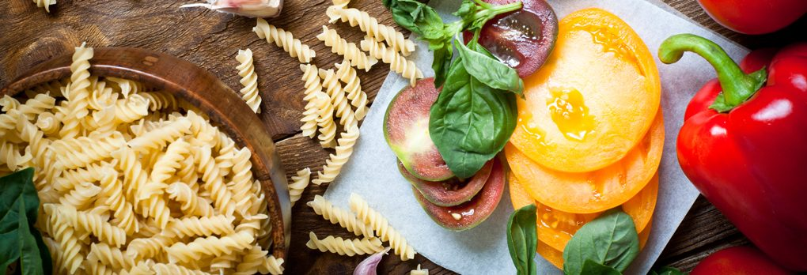
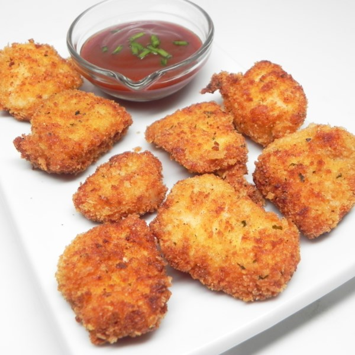
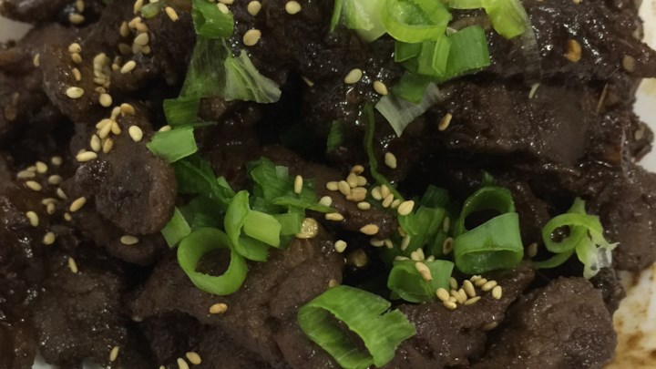
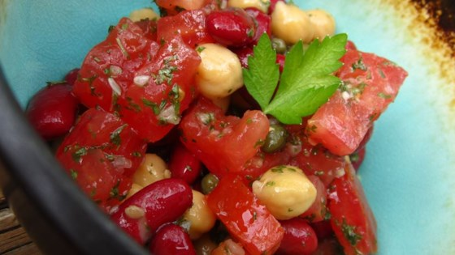
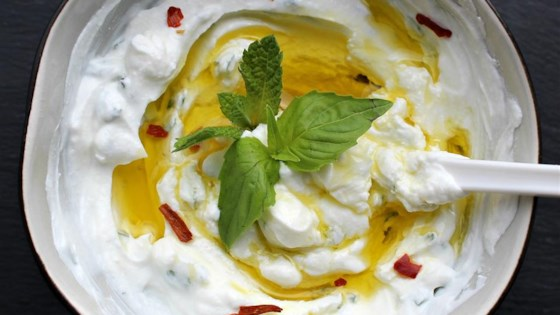

Cook and Eat

Parmesan Panko Chicken Poppers
Ingredients
- 2 cups panko bread crumbs
- 2 tablespoons grated Parmesan cheese
- 1 teaspoon salt
- 1 teaspoon ground black pepper
- 2 teaspoon garlic powder
- 2 eggs
- 1 tablespoon milk
- 1 cup all-purpose flour
-
1 1/2 pounds skinless, boneless chicken breast, cut in bite-sized
pieces
- oil for frying

Bulgogi (Korean BBQ Beef)
Ingredients
- 1/4 yellow onion, thinly sliced
- 2 green onions, chopped, dark green parts separated from white and light green parts
- 2 tablespoons toasted sesame seeds
- 3 cloves garlic, minced
- 1/4 teaspoon Korean red pepper flakes
- 2/4 teaspoon minced fresh ginger
- 1/8 teaspoon ground black pepper
- 1 1/2 pounds beef sirloin steak, cut very thin using kitchen shears
-
1 teaspoon honey, or to taste

Mediterranean Bean Salad
Ingredients
- 1 (15.5 ounce) can garbanzo beans, drained
- 2 (15 ounce) can kidney beans, drained
- 1 lemon, zested and juiced
- 1 medium tomato, chopped
- 1/4 cup chopped red onion
- 1/2 cup chopped fresh parsley
- 1 teaspoon capers, rinsed and drained
- 3 tablespoons extra virgin olive oil
- 1/2 teaspoon salt, or to taste

Labneh (Lebanese Yogurt)
Ingredients
- 1 1/2 cups Greek yogurt
- 1/4 cup extra-virgin olive oil
- 1 tablespoon chopped fresh mint
- 1 1 tablespoon chopped fresh dill
- 1/2 teaspoon kosher salt, or to taste